#Importing libraries
import pandas as pd
from matplotlib import pyplot as plt
import matplotlib.dates as mdates
import seaborn as sns
from scipy import stats
import statsmodels.api as sm
from statsmodels.stats.outliers_influence import variance_inflation_factor
import sklearn
from sklearn.preprocessing import StandardScaler
import numpy as npprint("scikit-learn:", sklearn.__version__)
print("numpy:", np.__version__)scikit-learn: 1.8.0
numpy: 2.4.4#Sets up my df
df = pd.read_csv("../Data/Cleaned_data/Clean.csv")
df = df.set_index("Date_month")
df.index = pd.to_datetime(df.index) #Sets my date index to specifically be date data type
df| SP500_monthly_return | SP500_volatility | YOY_inflation | Inflation_volatility | Inflation_surprise | SP500_volatility_lag | Inflation_lag | Volatility_lag | Surprise_lag | |
|---|---|---|---|---|---|---|---|---|---|
| Date_month | |||||||||
| 2001-01-01 | -2.429990 | 4.567131 | 3.721205 | 0.239086 | 0.721205 | 4.760707 | 3.436019 | 0.286482 | 0.636019 |
| 2001-02-01 | 7.028914 | 5.041273 | 3.529412 | 0.229091 | 0.729412 | 4.567131 | 3.721205 | 0.239086 | 0.721205 |
| 2001-03-01 | -9.628168 | 5.732928 | 2.982456 | 0.248253 | 0.182456 | 5.041273 | 3.529412 | 0.229091 | 0.729412 |
| 2001-04-01 | -7.682701 | 5.115852 | 3.218256 | 0.224944 | 0.118256 | 5.732928 | 2.982456 | 0.248253 | 0.182456 |
| 2001-05-01 | 10.522131 | 6.279052 | 3.563084 | 0.208416 | 0.363084 | 5.115852 | 3.218256 | 0.224944 | 0.118256 |
| ... | ... | ... | ... | ... | ... | ... | ... | ... | ... |
| 2025-08-01 | 0.645368 | 3.235395 | 2.938592 | 0.232003 | -1.861408 | 3.270294 | 2.742618 | 0.213919 | -1.757382 |
| 2025-09-01 | 2.845944 | 3.270414 | 3.022572 | 0.242695 | -1.677428 | 3.235395 | 2.938592 | 0.232003 | -1.861408 |
| 2025-10-01 | 4.608500 | 3.366205 | 2.858718 | 0.243175 | -1.741282 | 3.270414 | 3.022572 | 0.242695 | -1.677428 |
| 2025-11-01 | 2.097539 | 3.354060 | 2.696444 | 0.243321 | -1.803556 | 3.366205 | 2.858718 | 0.243175 | -1.741282 |
| 2025-12-01 | -0.574146 | 3.149627 | 2.653304 | 0.239463 | -1.546696 | 3.354060 | 2.696444 | 0.243321 | -1.803556 |
300 rows × 9 columns
#plots a monthly time series of the S&P500 return from the start of 2001 to the end of 2025
plt.figure(figsize=(10,6))
sns.lineplot(x=df.index, y=df.SP500_monthly_return)
plt.axhline(0, color="black", linestyle="dashed") #Produces a dotted line at y = 0
plt.xlim(df.index.min(), df.index.max()) #starts and ends the plot at the start and end of my data set (removes space before and after)
plt.gca().xaxis.set_major_locator(mdates.YearLocator(base=1)) #Sets x axis ticks to be every year
plt.xticks(rotation=45) #rotates dates to be 45 degrees to allow for better readability
plt.title("Returns Of The S&P500 Over Time", weight="bold")
plt.xlabel("Time")
plt.ylabel("Returns (%)")
plt.grid(linestyle="--",alpha=0.5) #Adds a grid to allow for better readability
plt.savefig("../Outputs/figures/sp500_returns_timeseries.png", dpi=300, bbox_inches='tight') #produces a png file of the plot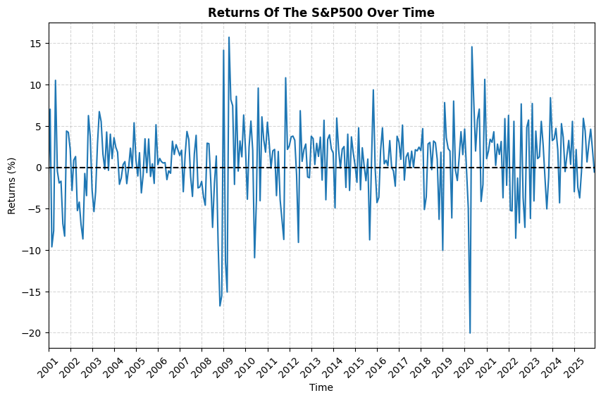
#plots a monthly time series of S&P500 volatility from the start of 2001 to the end of 2025
plt.figure(figsize=(10,6))
sns.lineplot(x=df.index, y=df.SP500_volatility)
plt.xlim(df.index.min(), df.index.max())
plt.gca().xaxis.set_major_locator(mdates.YearLocator(base=1))
plt.xticks(rotation=45)
plt.title("S&P500 Volatility Over Time", weight="bold")
plt.xlabel("Time")
plt.ylabel("Volatility (%)")
plt.grid(linestyle="--",alpha=0.5)
plt.savefig("../Outputs/figures/sp500_volatility_timeseries.png", dpi=300, bbox_inches='tight') 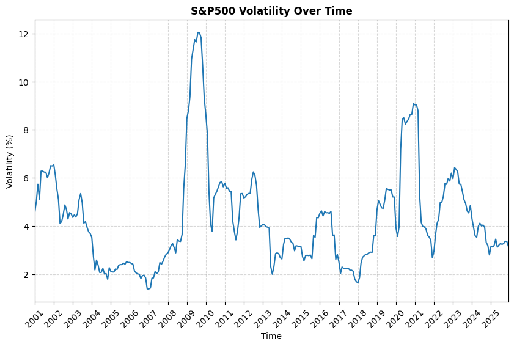
#Time series for inflation
plt.figure(figsize=(10,6))
sns.lineplot(x=df.index, y=df.YOY_inflation)
plt.axhline(0, color="black", linestyle="dashed")
plt.xlim(df.index.min(), df.index.max())
plt.gca().xaxis.set_major_locator(mdates.YearLocator(base=1))
plt.xticks(rotation=45)
plt.title("Inflation In The USA Over Time", weight="bold")
plt.xlabel("Time")
plt.ylabel("Year on Year Inflation (%)")
plt.grid(linestyle="--",alpha=0.5)
plt.savefig("../Outputs/figures/inflation_timeseries.png", dpi=300, bbox_inches='tight')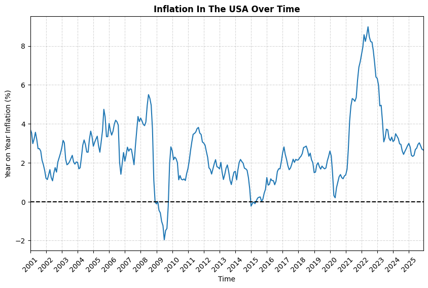
#Time series for inflation volatility
plt.figure(figsize=(10,6))
sns.lineplot(x=df.index, y=df.Inflation_volatility)
plt.xlim(df.index.min(), df.index.max())
plt.gca().xaxis.set_major_locator(mdates.YearLocator(base=1))
plt.xticks(rotation=45)
plt.title("Inflation volatility In The USA Over Time", weight="bold")
plt.xlabel("Time")
plt.ylabel("Inflation volatility (%)")
plt.grid(linestyle="--",alpha=0.5)
plt.savefig("../Outputs/figures/inflation_volatility_timeseries.png", dpi=300, bbox_inches='tight')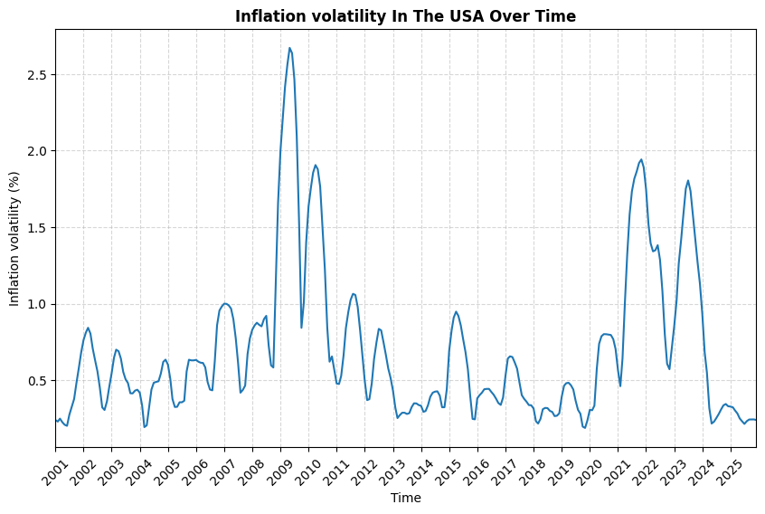
#Time series of inflation surprise over time (the difference between actual inflation and expected inflation)
plt.figure(figsize=(10,6))
sns.lineplot(x=df.index, y=df.Inflation_surprise)
plt.axhline(0, color="black", linestyle="dashed")
plt.xlim(df.index.min(), df.index.max())
plt.gca().xaxis.set_major_locator(mdates.YearLocator(base=1))
plt.xticks(rotation=45)
plt.title("Inflation Surprise In The USA Over Time", weight="bold")
plt.xlabel("Time")
plt.ylabel("Inflation surprise (PP)")
plt.grid(linestyle="--",alpha=0.5)
plt.savefig("../Outputs/figures/inflation_suprise_timeseries.png", dpi=300, bbox_inches='tight')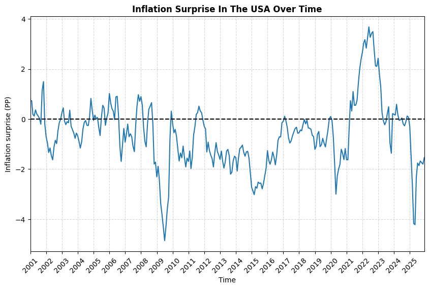
#Time series comparing all previously mentioned components of inflation over time on a monthly basis
plt.figure(figsize=(12,4))
ax1 = sns.lineplot(x=df.index, y=df.SP500_monthly_return, label = "S&P500 Return") #plots S&P500 return over time
ax1.grid(False) #Removes grid lines
ax1.set_ylabel("") #Removes y axis label
ax1.set_yticks([]) #removes y axis ticks since multiple y axis are being used
ax1.legend().set_visible(False)
ax2 = ax1.twinx() # allows me to add another y axis
sns.lineplot(x=df.index, y=df.YOY_inflation, ax=ax2, color="orange", label = "Inflation") #plots inflation level over time
ax2.grid(False)
ax2.set_ylabel("")
ax2.set_yticks([])
ax2.legend().set_visible(False)
ax3 = ax2.twinx()
sns.lineplot(x=df.index, y=df.Inflation_volatility, ax=ax3, color="red", label = "Inflation Volatility") #plots inflation volatility over time
ax3.grid(False)
ax3.set_ylabel("")
ax3.set_yticks([])
ax3.legend().set_visible(False)
ax4 = ax3.twinx()
sns.lineplot(x=df.index, y=df.Inflation_surprise, ax=ax4, color="purple", label = "Inflation Surprise") #plots inflation suprise over time
ax4.grid(False)
ax4.set_ylabel("")
ax4.set_yticks([])
ax4.legend().set_visible(False)
ax5 = ax4.twinx()
sns.lineplot(x=df.index, y=df.SP500_volatility, ax=ax5, color="green", label = "S&P500 Volatility") #plots inflation suprise over time
ax5.grid(False)
ax5.set_ylabel("")
ax5.set_yticks([])
ax5.legend().set_visible(False)
plt.gca().xaxis.set_major_locator(mdates.YearLocator(base=1)) #sets x axis ticks to be yearly
ax1.tick_params(axis='x', rotation=45)
ax1.set_xlabel("Time")
plt.title("Inflation Features vs S&P 500 Return Over Time (Monthly)", weight="bold")
ax1.set_xlim(df.index.min(), df.index.max()) #makes it so no white space is after y axis
plt.savefig("../Outputs/figures/combined_timeseries_monthly.png", dpi=300, bbox_inches='tight')
plt.show()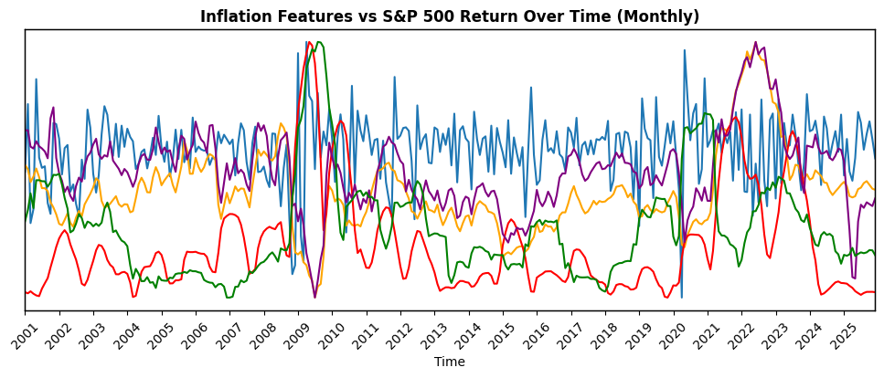
#Time series comparing all previously mentioned components of inflation over time on a yearly basis
df_yearly = df.resample('YE').mean() #Decided to resample data to yearly data points since monthly values made the graph very cluttered
plt.figure(figsize=(12,4))
ax1 = sns.lineplot(x=df_yearly.index, y=df_yearly.SP500_monthly_return, label = "S&P500 Return")
ax1.grid(False) #removes grid lines
ax1.set_ylabel("") #removes y axis label
ax1.set_yticks([]) #removes y tick names
ax2 = ax1.twinx() #allows me to add another y axis
sns.lineplot(x=df_yearly.index, y=df_yearly.YOY_inflation, ax=ax2, color="orange", label = "Inflation")
ax2.grid(False)
ax2.set_ylabel("")
ax2.set_yticks([])
ax3 = ax2.twinx()
sns.lineplot(x=df_yearly.index, y=df_yearly.Inflation_volatility, ax=ax3, color="red", label = "Inflation Volatility")
ax3.grid(False)
ax3.set_ylabel("")
ax3.set_yticks([])
ax4 = ax3.twinx()
sns.lineplot(x=df_yearly.index, y=df_yearly.Inflation_surprise, ax=ax4, color="purple", label = "Inflation Surprise")
ax4.grid(False)
ax4.set_ylabel("")
ax4.set_yticks([])
ax5 = ax4.twinx()
sns.lineplot(x=df_yearly.index, y=df_yearly.SP500_volatility, ax=ax5, color="green", label = "S&P500 Volatility") #plots inflation suprise over time
ax5.grid(False)
ax5.set_ylabel("")
ax5.set_yticks([])
plt.gca().xaxis.set_major_locator(mdates.YearLocator(base=1)) #changes x axis ticks to every year
ax1.tick_params(axis='x', rotation=45)
ax1.set_xlabel("Time")
plt.title("Inflation Features vs S&P 500 Return Over Time (yearly)", weight="bold")
#positions the legends in specific position:
ax1.legend(bbox_to_anchor=(0.2, -0.25)) # 1st
ax5.legend(bbox_to_anchor=(0.4, -0.25)) # 2nd
ax2.legend(bbox_to_anchor=(0.542, -0.25)) # 3rd
ax3.legend(bbox_to_anchor=(0.75, -0.25)) # 4th
ax4.legend(bbox_to_anchor=(0.95, -0.25)) # 5th
ax1.set_xlim(df_yearly.index.min(), df_yearly.index.max())
plt.savefig("../Outputs/figures/combined_timeseries_yearly.png", dpi=300, bbox_inches='tight')
plt.show()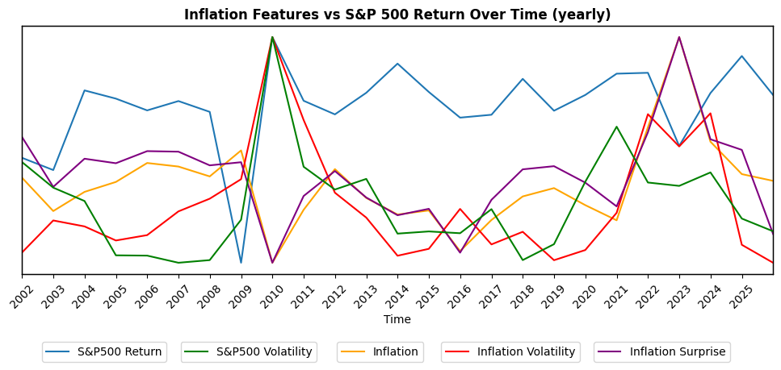
#Plotting S&P500 Return vs Inflation
plt.figure(figsize=(6,4))
sns.scatterplot(x=df.YOY_inflation, y=df.SP500_monthly_return) #plots a scatter plot
slope, intercept, rvalue, pvalue, std_error = stats.linregress(x=df.YOY_inflation, y=df.SP500_monthly_return) #gets useful statistical values
plt.plot(df.YOY_inflation, slope * df.YOY_inflation + intercept, color="red") #plots line of best fit
plt.title("S&P500 Returns vs Inflation", weight="bold", fontsize=16)
plt.xlabel("Year on Year Inflation (%)", fontsize=16)
plt.ylabel("S&P500 Monthly Return (%)", fontsize=16)
plt.savefig("../Outputs/figures/sp500_r_inflation.png", dpi=300, bbox_inches='tight')
#Statistical values:
print("P value:", pvalue)
print("R Value:", rvalue)
print("R Squared Value:", rvalue**2)P value: 0.23397878475624345
R Value: -0.06892059990226282
R Squared Value: 0.00475004909088779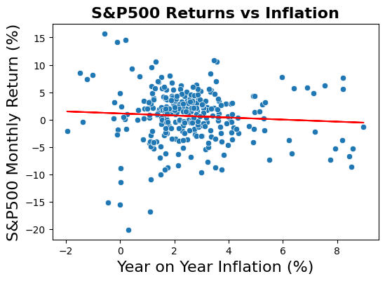
#Plotting S&P500 Return vs Inflation Volatility
plt.figure(figsize=(6,4))
sns.scatterplot(x=df.Inflation_volatility, y=df.SP500_monthly_return)
slope, intercept, rvalue, pvalue, std_error = stats.linregress(x=df.Inflation_volatility, y=df.SP500_monthly_return)
plt.plot(df.Inflation_volatility, slope * df.Inflation_volatility + intercept, color="red")
plt.title("S&P500 Returns vs Inflation Volatility", weight="bold", fontsize=16)
plt.xlabel("Inflation Volatility (PP)", fontsize=16)
plt.ylabel("S&P500 Monthly Return (%)", fontsize=16)
plt.savefig("../Outputs/figures/sp500_r_inflation_v.png", dpi=300, bbox_inches='tight')
print("P value:", pvalue)
print("R Value:", rvalue)
print("R Squared Value:", rvalue**2)P value: 0.9991787784331346
R Value: 5.967282099866619e-05
R Squared Value: 3.5608455659388564e-09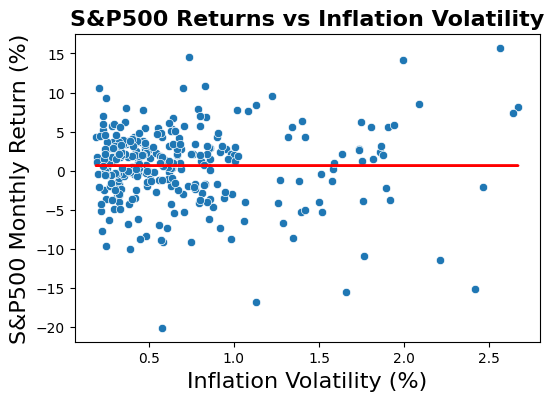
#Plotting S&P500 Return vs Inflation Surprise
plt.figure(figsize=(6,4))
sns.scatterplot(x=df.Inflation_surprise, y=df.SP500_monthly_return)
slope, intercept, rvalue, pvalue, std_error = stats.linregress(x=df.Inflation_surprise, y=df.SP500_monthly_return)
plt.plot(df.Inflation_surprise, slope * df.Inflation_surprise + intercept, color="red")
plt.title("S&P500 Returns vs Inflation Surprise", weight="bold", fontsize=16)
plt.xlabel("Inflation Surprise (PP)", fontsize=16)
plt.ylabel("S&P500 Monthly Return (%)", fontsize=16)
plt.savefig("../Outputs/figures/sp500_r_inflation_s.png", dpi=300, bbox_inches='tight')
print("P value:", pvalue)
print("R Value:", rvalue)
print("R Squared Value:", rvalue**2)P value: 0.14448432012952442
R Value: -0.08445433519730161
R Squared Value: 0.007132534733618178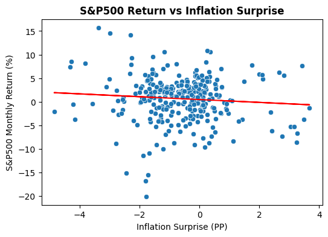
#Plotting S&P500 Volatility vs Inflation
plt.figure(figsize=(6,4))
sns.scatterplot(x=df.YOY_inflation, y=df.SP500_volatility)
slope, intercept, rvalue, pvalue, std_error = stats.linregress(x=df.YOY_inflation, y=df.SP500_volatility)
plt.plot(df.YOY_inflation, slope * df.YOY_inflation + intercept, color="red")
plt.title("S&P500 Volatility vs Inflation", weight="bold", fontsize=16)
plt.ylabel("S&P500 Volatility (PP)", fontsize=16)
plt.xlabel("Year on Year Inflation (%)", fontsize=16)
plt.savefig("../Outputs/figures/sp500_v_inflation.png", dpi=300, bbox_inches='tight')
print("P value:", pvalue)
print("R Value:", rvalue)
print("R Squared Value:", rvalue**2)P value: 7.186488098294385e-06
R Value: -0.25586208702537694
R Squared Value: 0.06546540757698156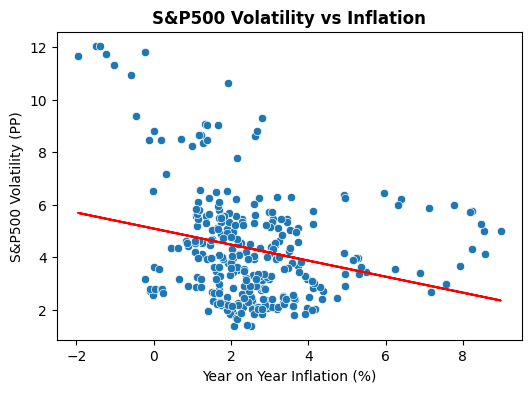
#Plotting S&P500 Volatility vs Inflation Volatility
plt.figure(figsize=(6,4))
sns.scatterplot(x=df.Inflation_volatility, y=df.SP500_volatility)
slope, intercept, rvalue, pvalue, std_error = stats.linregress(x=df.Inflation_volatility, y=df.SP500_volatility)
plt.plot(df.Inflation_volatility, slope * df.Inflation_volatility + intercept, color="red")
plt.title("S&P500 Volatility vs Inflation Volatility", weight="bold", fontsize=16)
plt.ylabel("S&P500 Volatility (PP)", fontsize=16)
plt.xlabel("Inflation Volatility (PP)", fontsize=16)
plt.savefig("../Outputs/figures/sp500_v_inflation_v.png", dpi=300, bbox_inches='tight')
print("P value:", pvalue)
print("R Value:", rvalue)
print("R Squared Value:", rvalue**2)P value: 5.831009716507495e-17
R Value: 0.4579780013714574
R Squared Value: 0.20974384974019464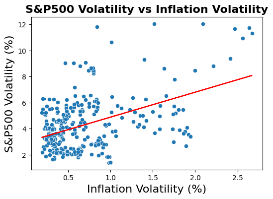
#Plotting S&P500 Volatility vs Inflation Surprise
plt.figure(figsize=(6,4))
sns.scatterplot(x=df.Inflation_surprise, y=df.SP500_volatility)
slope, intercept, rvalue, pvalue, std_error = stats.linregress(x=df.Inflation_surprise, y=df.SP500_volatility)
plt.plot(df.Inflation_surprise, slope * df.Inflation_surprise + intercept, color="red")
plt.title("S&P500 Volatility vs Inflation Surprise", weight="bold", fontsize=16)
plt.ylabel("S&P500 Volatility (PP)", fontsize=16)
plt.xlabel("Inflation Surprise (PP)", fontsize=16)
plt.savefig("../Outputs/figures/sp500_v_inflation_s.png", dpi=300, bbox_inches='tight')
print("P value:", pvalue)
print("R Value:", rvalue)
print("R Squared Value:", rvalue**2)P value: 2.0287410942608322e-05
R Value: -0.2433565753699523
R Squared Value: 0.05922242277579128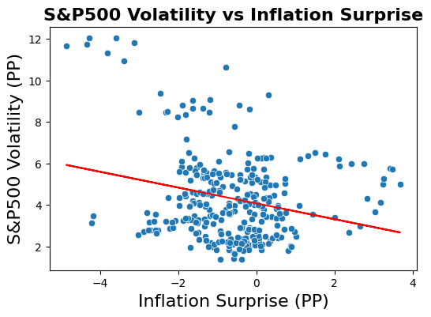
#Regression modelling: Regressing sp500 returns on inflation metrics: sp500 returns = a + b1 Inflation + b2 Inflation Volatiltiy + b3 Inflation Surprise + u
x = df[["YOY_inflation", "Inflation_volatility", "Inflation_surprise"]]
y = df["SP500_monthly_return"]
x_std = pd.DataFrame(StandardScaler().fit_transform(x), columns=x.columns, index=x.index) #standardises independent variables to get a comparible output
x_std = sm.add_constant(x_std) #adds y intercept
model1 = sm.OLS(y, x_std).fit(cov_type='HC1') #Runs the regression with robust standard errors since there was heterogeneity in my scatter plots
print(model1.summary2()) #outputs the model sumary
with open("../Outputs/Tables/regression_sp500_r.txt", "w") as f: #writes the regression table to a new file
f.write(model1.summary2().as_text()) Results: Ordinary least squares
======================================================================
Model: OLS Adj. R-squared: -0.003
Dependent Variable: SP500_monthly_return AIC: 1792.2310
Date: 2026-04-27 23:17 BIC: 1807.0461
No. Observations: 300 Log-Likelihood: -892.12
Df Model: 3 F-statistic: 0.6310
Df Residuals: 296 Prob (F-statistic): 0.596
R-squared: 0.007 Scale: 22.714
----------------------------------------------------------------------
Coef. Std.Err. z P>|z| [0.025 0.975]
----------------------------------------------------------------------
const 0.6648 0.2752 2.4160 0.0157 0.1255 1.2041
YOY_inflation 0.1395 0.6879 0.2027 0.8394 -1.2089 1.4878
Inflation_volatility 0.0022 0.4393 0.0050 0.9960 -0.8589 0.8633
Inflation_surprise -0.5254 0.5912 -0.8887 0.3742 -1.6840 0.6333
----------------------------------------------------------------------
Omnibus: 41.381 Durbin-Watson: 2.068
Prob(Omnibus): 0.000 Jarque-Bera (JB): 90.870
Skew: -0.696 Prob(JB): 0.000
Kurtosis: 5.309 Condition No.: 4
======================================================================
Notes:
[1] Standard Errors are heteroscedasticity robust (HC1)#Regressing sp500 returns on lagged variables to see if current inflation values can predict future sp500 returns
#sp500 returns = a + b1 Lagged Inflation + b2 Lagged Inflation Volatiltiy + b3 Lagged Inflation Surprise + u
x = df[["Inflation_lag", "Volatility_lag", "Surprise_lag"]]
y = df["SP500_monthly_return"]
x_std = pd.DataFrame(StandardScaler().fit_transform(x), columns=x.columns, index=x.index)
x_std = sm.add_constant(x_std)
model2 = sm.OLS(y, x_std).fit(cov_type='HC1')
print(model2.summary2())
with open("../Outputs/Tables/regression_sp500_r_lagged.txt", "w") as f:
f.write(model2.summary2().as_text()) Results: Ordinary least squares
======================================================================
Model: OLS Adj. R-squared: 0.011
Dependent Variable: SP500_monthly_return AIC: 1788.1551
Date: 2026-04-27 23:17 BIC: 1802.9702
No. Observations: 300 Log-Likelihood: -890.08
Df Model: 3 F-statistic: 1.511
Df Residuals: 296 Prob (F-statistic): 0.212
R-squared: 0.021 Scale: 22.408
-----------------------------------------------------------------------
Coef. Std.Err. z P>|z| [0.025 0.975]
-----------------------------------------------------------------------
const 0.6648 0.2733 2.4324 0.0150 0.1291 1.2004
Inflation_lag -0.4298 0.6587 -0.6525 0.5141 -1.7208 0.8612
Volatility_lag 0.1776 0.4028 0.4408 0.6593 -0.6119 0.9670
Surprise_lag -0.2631 0.5442 -0.4835 0.6287 -1.3297 0.8035
----------------------------------------------------------------------
Omnibus: 45.574 Durbin-Watson: 2.086
Prob(Omnibus): 0.000 Jarque-Bera (JB): 102.208
Skew: -0.756 Prob(JB): 0.000
Kurtosis: 5.427 Condition No.: 4
======================================================================
Notes:
[1] Standard Errors are heteroscedasticity robust (HC1)#MLR: Regressing sp500 volatility on inflation metrics: sp500 volatility = a + b1 Inflation + b2 Inflation Volatiltiy + b3 Inflation Surprise +b4 Inflation^2 + b5 Inflation Surprise^2 + u
df["Inflation_sqrd"] = df.YOY_inflation**2
df["Surprise_sqrd"] = df.Inflation_surprise**2
x = df[["YOY_inflation", "Inflation_volatility", "Inflation_surprise", "Inflation_sqrd", "Surprise_sqrd"]]
y = df["SP500_volatility"]
x_std = pd.DataFrame(StandardScaler().fit_transform(x), columns=x.columns, index=x.index)
x_std = sm.add_constant(x_std)
model3 = sm.OLS(y, x_std).fit(cov_type='HC1')
print(model3.summary2())
with open("../Outputs/Tables/regression_sp500_v.txt", "w") as f:
f.write(model3.summary2().as_text()) Results: Ordinary least squares
====================================================================
Model: OLS Adj. R-squared: 0.362
Dependent Variable: SP500_volatility AIC: 1165.9034
Date: 2026-04-27 23:17 BIC: 1188.1261
No. Observations: 300 Log-Likelihood: -576.95
Df Model: 5 F-statistic: 43.56
Df Residuals: 294 Prob (F-statistic): 1.56e-33
R-squared: 0.373 Scale: 2.7973
--------------------------------------------------------------------
Coef. Std.Err. z P>|z| [0.025 0.975]
--------------------------------------------------------------------
const 4.3058 0.0966 44.5901 0.0000 4.1165 4.4950
YOY_inflation -1.4905 0.3599 -4.1419 0.0000 -2.1958 -0.7852
Inflation_volatility 0.7870 0.0983 8.0076 0.0000 0.5944 0.9796
Inflation_surprise 0.7924 0.2202 3.5983 0.0003 0.3608 1.2241
Inflation_sqrd 0.2463 0.4497 0.5477 0.5839 -0.6350 1.1276
Surprise_sqrd 0.5930 0.1744 3.4002 0.0007 0.2512 0.9348
--------------------------------------------------------------------
Omnibus: 18.669 Durbin-Watson: 0.133
Prob(Omnibus): 0.000 Jarque-Bera (JB): 21.461
Skew: 0.546 Prob(JB): 0.000
Kurtosis: 3.725 Condition No.: 13
====================================================================
Notes:
[1] Standard Errors are heteroscedasticity robust (HC1)#MLR: Regressing sp500 volatility on lagged inflation metrics:
#sp500 returns = a + b1 Lagged Inflation + b2 Lagged Inflation Volatiltiy + b3 Lagged Inflation Surprise + u
x = df[["Inflation_lag", "Volatility_lag", "Surprise_lag"]]
y = df["SP500_volatility"]
x_std = pd.DataFrame(StandardScaler().fit_transform(x), columns=x.columns, index=x.index)
x_std = sm.add_constant(x_std)
model4 = sm.OLS(y, x_std).fit(cov_type='HC1')
print(model4.summary2())
with open("../Outputs/Tables/regression_sp500_v_lag.txt", "w") as f:
f.write(model4.summary2().as_text()) Results: Ordinary least squares
==================================================================
Model: OLS Adj. R-squared: 0.301
Dependent Variable: SP500_volatility AIC: 1191.2940
Date: 2026-04-27 23:17 BIC: 1206.1091
No. Observations: 300 Log-Likelihood: -591.65
Df Model: 3 F-statistic: 32.65
Df Residuals: 296 Prob (F-statistic): 2.93e-18
R-squared: 0.308 Scale: 3.0644
------------------------------------------------------------------
Coef. Std.Err. z P>|z| [0.025 0.975]
------------------------------------------------------------------
const 4.3058 0.1011 42.6027 0.0000 4.1077 4.5039
Inflation_lag -0.7943 0.1815 -4.3768 0.0000 -1.1500 -0.4386
Volatility_lag 1.0451 0.1102 9.4791 0.0000 0.8290 1.2611
Surprise_lag 0.1652 0.1697 0.9736 0.3303 -0.1674 0.4978
------------------------------------------------------------------
Omnibus: 12.744 Durbin-Watson: 0.111
Prob(Omnibus): 0.002 Jarque-Bera (JB): 13.600
Skew: 0.521 Prob(JB): 0.001
Kurtosis: 2.972 Condition No.: 4
==================================================================
Notes:
[1] Standard Errors are heteroscedasticity robust (HC1)x = df[["YOY_inflation", "Inflation_volatility"]]
y = df["SP500_volatility"]
x_std = pd.DataFrame(StandardScaler().fit_transform(x), columns=x.columns, index=x.index)
x_std = sm.add_constant(x_std)
model5 = sm.OLS(y, x_std).fit(cov_type='HC1')
print(model5.summary2())
with open("../Outputs/Tables/regression_sp500_v_no_S.txt", "w") as f:
f.write(model5.summary2().as_text()) Results: Ordinary least squares
====================================================================
Model: OLS Adj. R-squared: 0.300
Dependent Variable: SP500_volatility AIC: 1190.7903
Date: 2026-04-27 23:17 BIC: 1201.9016
No. Observations: 300 Log-Likelihood: -592.40
Df Model: 2 F-statistic: 50.87
Df Residuals: 297 Prob (F-statistic): 1.00e-19
R-squared: 0.305 Scale: 3.0694
--------------------------------------------------------------------
Coef. Std.Err. z P>|z| [0.025 0.975]
--------------------------------------------------------------------
const 4.3058 0.1011 42.5683 0.0000 4.1075 4.5040
YOY_inflation -0.6478 0.1294 -5.0051 0.0000 -0.9014 -0.3941
Inflation_volatility 1.0285 0.1038 9.9114 0.0000 0.8251 1.2319
--------------------------------------------------------------------
Omnibus: 21.645 Durbin-Watson: 0.107
Prob(Omnibus): 0.000 Jarque-Bera (JB): 24.229
Skew: 0.653 Prob(JB): 0.000
Kurtosis: 3.485 Condition No.: 1
====================================================================
Notes:
[1] Standard Errors are heteroscedasticity robust (HC1)#used vif to calculate multicolinearity coefficients
x = df[["YOY_inflation", "Inflation_surprise"]]
x = sm.add_constant(x)
vif_df = pd.DataFrame()
vif_df["variable"] = x.columns
vif_df["VIF"] = [variance_inflation_factor(x.values, i)
for i in range(x.shape[1])]
vif_df.to_csv("../Outputs/Tables/VIF.csv")
vif_df| variable | VIF | |
|---|---|---|
| 0 | const | 17.906135 |
| 1 | YOY_inflation | 4.778747 |
| 2 | Inflation_surprise | 4.778747 |
#Running the regression:sp500 volatility = a + b1 Inflation + b2 Inflation Volatility + b3 (Inflation * Inflation volatility)
df["Inflation_x_volatility"] = df.YOY_inflation * df.Inflation_volatility
x = df[["YOY_inflation", "Inflation_volatility", "Inflation_x_volatility"]]
y = df["SP500_volatility"]
x_std = pd.DataFrame(StandardScaler().fit_transform(x), columns=x.columns, index=x.index)
x_std = sm.add_constant(x_std)
model6 = sm.OLS(y, x_std).fit(cov_type='HC1')
print(model6.summary2())
with open("../Outputs/Tables/regression_sp500_v_interaction.txt", "w") as f:
f.write(model6.summary2().as_text()) Results: Ordinary least squares
======================================================================
Model: OLS Adj. R-squared: 0.330
Dependent Variable: SP500_volatility AIC: 1178.6915
Date: 2026-04-27 23:17 BIC: 1193.5067
No. Observations: 300 Log-Likelihood: -585.35
Df Model: 3 F-statistic: 84.91
Df Residuals: 296 Prob (F-statistic): 1.16e-39
R-squared: 0.337 Scale: 2.9384
----------------------------------------------------------------------
Coef. Std.Err. z P>|z| [0.025 0.975]
----------------------------------------------------------------------
const 4.3058 0.0990 43.5070 0.0000 4.1118 4.4997
YOY_inflation 0.1390 0.2510 0.5536 0.5798 -0.3530 0.6309
Inflation_volatility 1.3797 0.0999 13.8043 0.0000 1.1838 1.5756
Inflation_x_volatility -0.9708 0.2196 -4.4201 0.0000 -1.4013 -0.5403
----------------------------------------------------------------------
Omnibus: 27.767 Durbin-Watson: 0.115
Prob(Omnibus): 0.000 Jarque-Bera (JB): 33.624
Skew: 0.720 Prob(JB): 0.000
Kurtosis: 3.786 Condition No.: 5
======================================================================
Notes:
[1] Standard Errors are heteroscedasticity robust (HC1)#MLR: Regressing sp500 volatility on inflation metrics and previous period volatility:
#sp500 volatility = a + b1 Sp500 volatility lag + b2 Inflation + b3 Inflation Volatiltiy + b4 Inflation Surprise + u
#This regression accounts for volatility persistence.
x = df[["SP500_volatility_lag", "YOY_inflation", "Inflation_volatility", "Inflation_surprise"]]
y = df["SP500_volatility"]
x_std = pd.DataFrame(StandardScaler().fit_transform(x), columns=x.columns, index=x.index)
x_std = sm.add_constant(x_std)
model7 = sm.OLS(y, x_std).fit(cov_type='HC1')
print(model7.summary2())
with open("../Outputs/Tables/regression_sp500_v_volatility_persistence.txt", "w") as f:
f.write(model7.summary2().as_text()) Results: Ordinary least squares
====================================================================
Model: OLS Adj. R-squared: 0.938
Dependent Variable: SP500_volatility AIC: 467.7166
Date: 2026-04-27 23:17 BIC: 486.2355
No. Observations: 300 Log-Likelihood: -228.86
Df Model: 4 F-statistic: 911.2
Df Residuals: 295 Prob (F-statistic): 1.28e-164
R-squared: 0.938 Scale: 0.27380
--------------------------------------------------------------------
Coef. Std.Err. z P>|z| [0.025 0.975]
--------------------------------------------------------------------
const 4.3058 0.0302 142.5255 0.0000 4.2466 4.3650
SP500_volatility_lag 1.9700 0.0451 43.6635 0.0000 1.8815 2.0584
YOY_inflation -0.0496 0.0633 -0.7845 0.4327 -0.1737 0.0744
Inflation_volatility 0.0710 0.0467 1.5203 0.1284 -0.0205 0.1626
Inflation_surprise -0.0420 0.0508 -0.8269 0.4083 -0.1415 0.0575
--------------------------------------------------------------------
Omnibus: 68.204 Durbin-Watson: 1.242
Prob(Omnibus): 0.000 Jarque-Bera (JB): 1390.633
Skew: -0.167 Prob(JB): 0.000
Kurtosis: 13.542 Condition No.: 4
====================================================================
Notes:
[1] Standard Errors are heteroscedasticity robust (HC1)